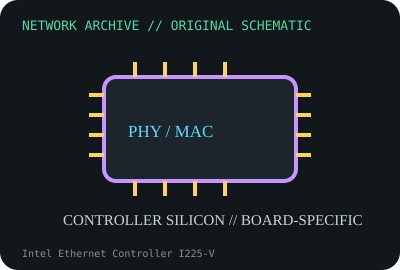

[ MODEL-SPECIFIC NETWORK HARDWARE ]
Intel Ethernet Controller I225-V
Single-port 2.5GbE controller used on client motherboards and add-in designs. Confirm exact product label and revision before applying specifications.

IDENTIFICATION: Confirm manufacturer PID, hardware revision, device ID or module suffix. Nominal standards/link rates are not measurements of payload performance.
Exact specifications and compatibility
| Dedicated subcategory | Ethernet controllers and PHYs |
|---|---|
| Exact product/model | Intel Ethernet Controller I225-V |
| Bus, ports and physical interface | PCIe 3.1 x1 host interface; board provides 2.5GBASE-T PHY connection through magnetics and RJ-45. |
| PHY, radio or protocol | Intel I225-V supports 10/100/1000/2500BASE-T; stepping/errata are significant. |
| Nominal rate (not measured) | Up to 2.5Gb/s nominal on one Ethernet port, only in a completed host-board implementation. |
| Measured throughput | No measured benchmark is claimed for a physical specimen. A valid result must record host/peer, link partner, media/cable, driver/firmware, traffic pattern, test tool and duration. |
| Drivers, OS and firmware | Intel igc Linux driver and Intel/OEM Windows packages vary by controller stepping and motherboard BIOS/NVM. |
| Compatibility | Requires a specific motherboard/card design with appropriate analog components; not a removable M.2 or PCIe adapter by itself. |
| Variant warning | I225-V onboard controller is distinct from I225-T1 retail card; early steppings have known revision-dependent behavior. Record exact B-step and NVM. |
Model and revision notes
I225-V onboard controller is distinct from I225-T1 retail card; early steppings have known revision-dependent behavior. Record exact B-step and NVM.
Intel igc Linux driver and Intel/OEM Windows packages vary by controller stepping and motherboard BIOS/NVM.
Requires a specific motherboard/card design with appropriate analog components; not a removable M.2 or PCIe adapter by itself.
Archival, ESD and preservation notes
Record stepping, top marks, motherboard model, NVM and MAC mapping. Keep bare ICs in conductive ESD packaging; do not power an unverified board.
Document source URL, access date, document revision and specimen label/condition. Preserve without credentials or private configuration.
Primary manufacturer and standards sources
- Intel I225-V product specificationsPrimary manufacturer or standards documentation; verify exact SKU and host revision.
- Intel Ethernet driver/support downloadsPrimary manufacturer or standards documentation; verify exact SKU and host revision.
- IEEE 802.3bz Ethernet standardsPrimary manufacturer or standards documentation; verify exact SKU and host revision.
Manufacturer statements cover the named part or its documented product family; the exact labeled revision and vendor compatibility list take precedence.